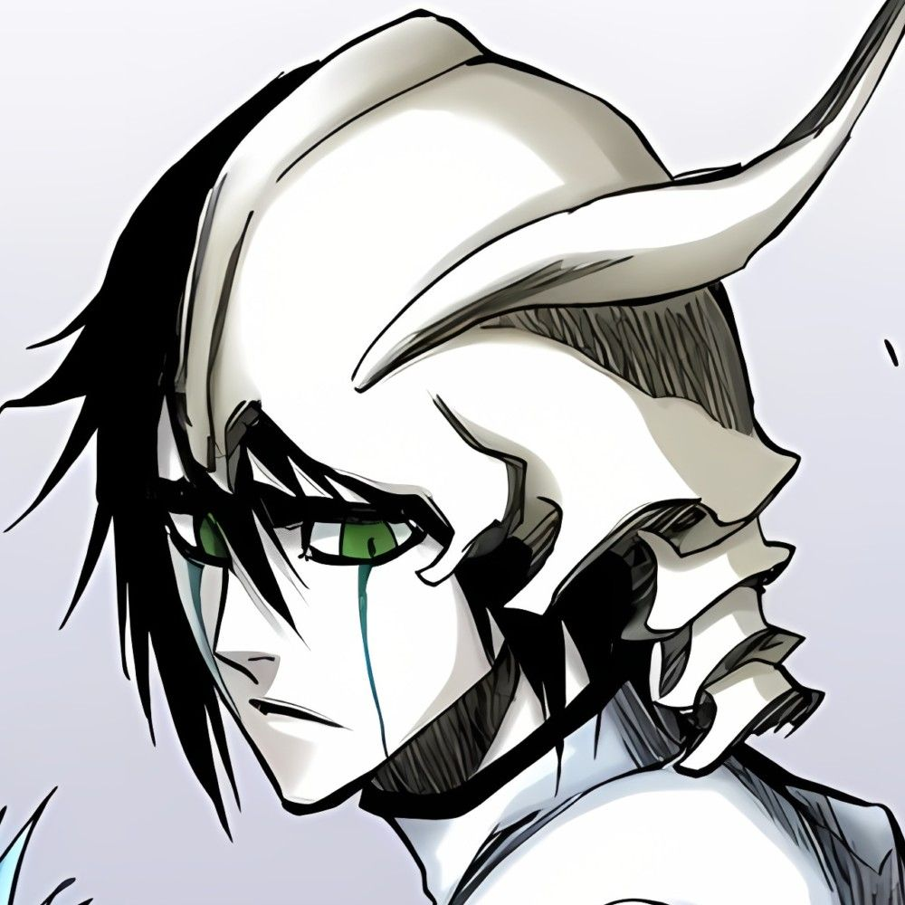

Ulquiorra é um Arrancar masculino esguio, de estatura média e aparência melancólica. Ele tem cabelo preto bastante curto e bagunçado, pele branca clara, lábio superior preto e olhos verdes com pupilas pequenas em forma de fenda, semelhantes às de um gato. Parte de sua franja cai entre os olhos e ele tem sobrancelhas bem grossas. Ele tem linhas azul-petróleo que descem da parte inferior dos olhos. Sua expressão facial raramente muda, embora ele quase sempre esteja carrancudo. Ele veste roupas típicas de Arrancar: uma jaqueta branca, faixa preta e um hakama branco. No entanto, sua jaqueta tem abas de casaco mais longas que as outras e a gola é mais alta.
Como a maioria dos outros Arrancar, ele possui vestígios de sua vida anterior como um Hollow em sua aparência. Seu buraco Hollow está localizado em seu mangá esterno, embora o buraco estivesse inicialmente localizado na base de sua garganta. O restante de sua máscara Hollow fica no lado superior esquerdo de sua cabeça, formando um capacete quebrado com chifres. Sua tatuagem Espada fica no lado esquerdo do peito.
Como um Hollow, Ulquiorra era aproximadamente do mesmo tamanho, com uma máscara e corpo totalmente brancos, e grandes asas pretas montadas na parte inferior das costas. Sua máscara cobria todo o rosto, com uma linha, subindo pelo meio, divergindo em três perto do topo de sua cabeça. Do nível da orelha, dois chifres brotaram.
